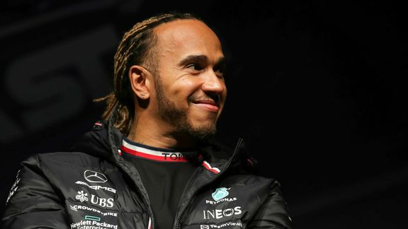
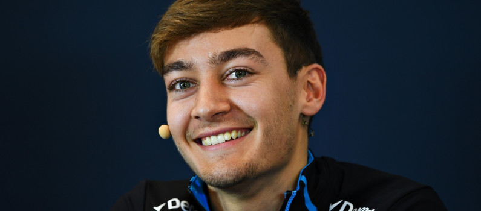

Mercedes AMG
Écurie ayant 125 ans d’histoire automobile, Mercedes a remporté neuf titres de champion du monde des pilotes : avec Juan Manuel Fangio (1954,1955),puis Nico Rosberg (2016) et avec l’incroyable Lewis Hamilton, ayant marqué un tournant dans l’histoire de Mercedes, avec 6 victoires au compteur !
C’est une écurie allemande basée à Brackley, en Angleterre, appartenant au directeur Toto Wolff.
Les pilotes de la saison 2022 :
Lewis Hamilton

Lewis a fait ses débuts en Formule 1 chez Mclaren Mercedes, en 2007, à seulement 22 ans. Malgré son jeune âge il a combattu avec confiance pour son premier titre mondial, les nombres records établis par Lewis pour sa première saison est phénoménal et démontre sa grande classe : le plus grand nombre de victoires, de pole position ainsi que le plus grand nombre de points dans un début de saison.
Ce qui avait déjà été jusque-là une extraordinaire carrière, atteint son apogée lors de la saison 2008 avec sa victoire au championnat du monde de F1. Lors de son titre, Lewis était âgé de 23 ans devenant ainsi le plus jeune champion du monde. En 2020, Lewis Hamilton frappe plus fort encore en remportant pour la 7e fois de sa carrière le titre de champion du monde des pilotes, grâce à ce nombre incalculable de victoires, le septuple champion du monde rejoint les plus grands piliers de l’histoire de la F1. Il est aujourd’hui le pilote qui comptabilise le plus de victoires.
George Russell

Vainqueur du championnat de GP3 Series en 2017 puis de Formule 2 en 2018, il fait ses débuts en Formule 1 l’année suivante, au sein de l'écurie Williams. Sa deuxième place en qualifications lors du Grand Prix de Belgique 2021 lui permet, au bout d'un tour, d'obtenir son premier podium en Formule 1. Il est engagé par l'écurie Mercedes pour faire équipe avec Lewis Hamilton à partir de la saison 2022.